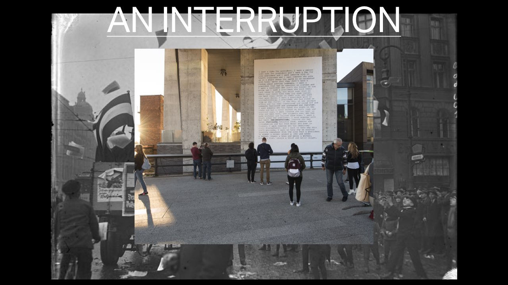
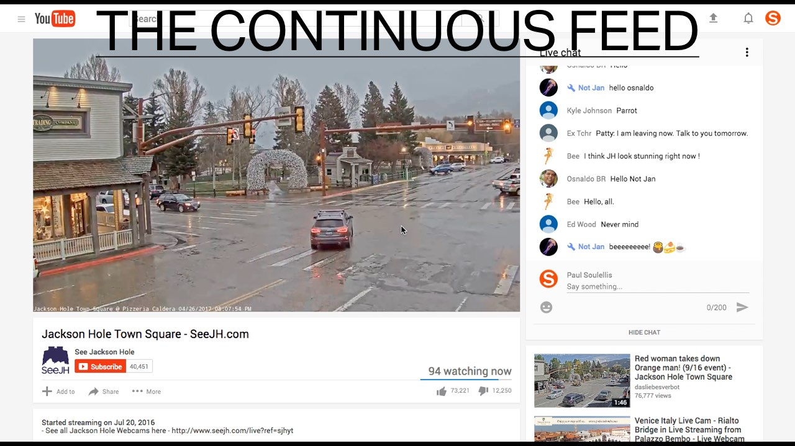
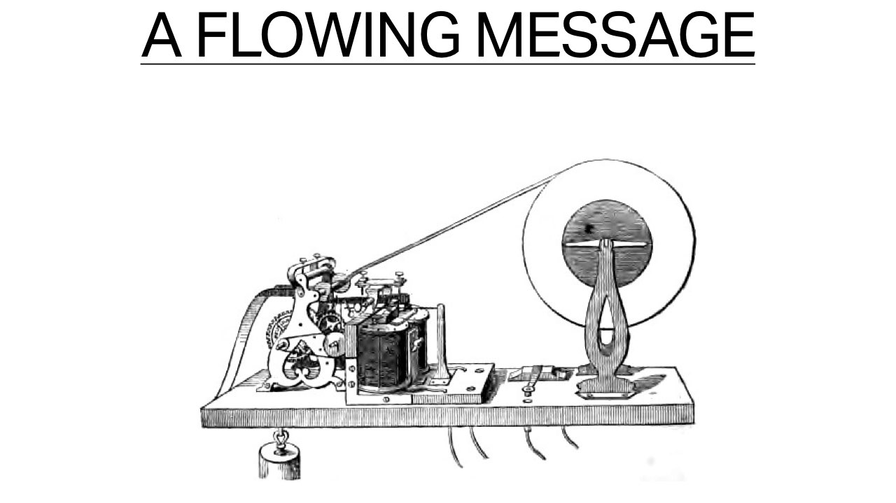
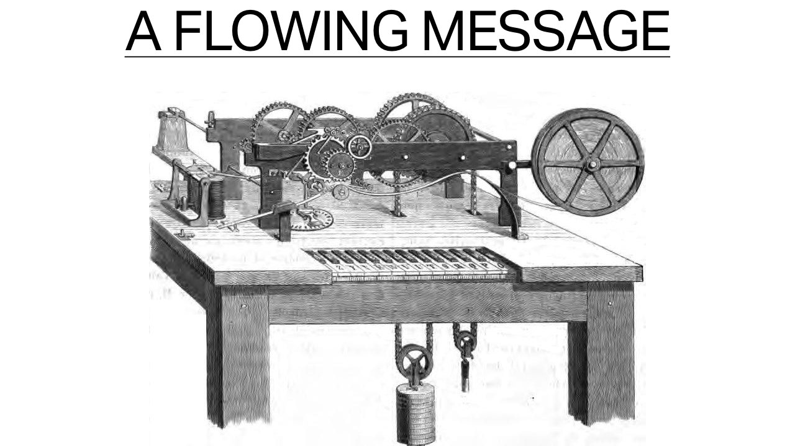
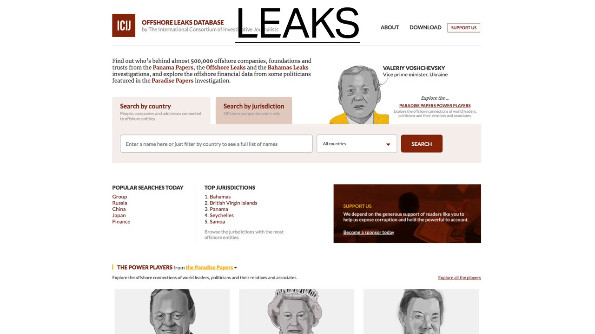

Performing the feed
A talk delivered at The Cybernetics Conference
November 18, 2017
I wrote this talk because I approach network culture through the lens of experimental publishing as artistic practice, and I see that lens shifting dramatically right now, as algorithmic media and the network become more and more entangled. Making public is expanding into a new array of gestures and performative conditions that need to be examined and theorized, perhaps as a new paradigm. So this talk is my attempt to work something out, in real time, and I would love feedback.
I’d like to start with the post—the blog post, a news story that’s been posted, a posted tweet. I see the act of posting as one of the foundational gestures of making public. Especially now, when we have an expanded field of publishing that includes anyone with a device who can amplify to the network.
Looking for the origins of the post—where do we get this gesture, the word, its meaning? I don’t have any conclusive evidence, but the post appears to have a long trajectory that points towards something very basic and physical—an actual wooden post.
The poster, the post office, the daily post, ‘keep me posted,’ and even the Post-It—all of these are ancestors of the town crier, who, after reading proclamations in public, at the center of town, would nail the notice to a door post, in a visible place.
Posting a notice was a kind of evidence of news, the residue of a performance.
This is the act of physically placing language on a vertical surface, in public space, and it’s here in this gesture that I like to look for the origin stories of publishing—of making public.
That’s all pre-network. Whether it’s posting—or dropping, or stacking, performing, or just handing a pamphlet to someone—dispersing messages in public has always been a signal that needs to read apart from the noise, a kind of interruption.

This is a gesture of disturbance, a break in the pattern, or the line of sight—an announcement that draws attention through materiality, addressivity, and difference. It’s not always a radical disruption, but for a public to form around a work that circulates, it needs to ask for attention.
Maybe we can define this as the old publishing paradigm, and I really mean publishing in the broadest sense—a post-like gesture, built on the material condition of the interruption.
At its most basic, this usually involves a visible substrate, with clear markings that result in a record that can circulate. The idea of the fixed container in time and space—carved stone, a poster, the book object, the printed page. Known, traceable voices, whether it be the individual author, the publisher, or an institution, performing traditional narrative structures.
Semantic-based curation—material that’s been meaningfully selected by humans around its capacity to assemble publics and generate discourse, usually following the one-to-many model—a single source, duplication, and amplification.
Recently, I’ve been paying attention to another kind of making public, to posted information that seems to fall outside this paradigm. I’m talking about feeds that never end. I’ve become addicted to watching Twitch streamers, who present themselves watching, or gaming, or doing nothing at all, sometimes for days at a time. What kind of an event is this . . . is it publishing? It’s performative and it’s certainly making public, but it’s less like a signal and more like noise; a durational time-space that forms around the image, as it circulates, and it seems to go on forever.

These are broadcasts, but not the 20th century kind—they require a new kind of watching. The story is never resolved, because it doesn’t develop; it’s simply a constant becoming. In the space of the live-streaming cam, it’s not the singular act of posting that matters, but the ongoing, continuous transmission of minor events. And frequently, these cams command a sizable audience.

Rob Horning refers to this as the new boredom—a state of watching-togetherness. We’re interested because others are watching, and the feed allows us to enter a state of pure reaction, in the moment, together. But because feeds are usually live, we come to them expecting a surprise. Something could go wrong. The continuous feed feeds our need to watch, but also to bear witness, to capture, and to judge. These are politicized spaces, where it’s easy to find bias, bigotry, hate speech, and injustice.
There are countless live streams, cameras pointed at beaches, at animals, autonomous creatures, empty rooms, crime scenes, and protests. We watch them together, separated in space but connected in time.
The very first streaming cam, in 1991, was aimed at a coffee pot. The most boring of scenes that signaled the start of a new kind of distanced watching.
Today, the coffee pot watches us. And we watch each other. In public and in private spaces, and in our own homes.
As our tolerance for surveillance increases, what it means to watch has shifted. In the new boredom, Horning says, we desire a sort of ‘god’ view as a collective subject, becoming the they who does the observing, instead of the me being seen. Our new position might feel safe, like a kind of removed resistance. A soothing counter to the police state.
But keeping us watching is part of the deal. Pure, passive consumption that somehow, at the same time, feels active and powerful. A reverse panopticon, where we participate in the very structures that oppress.
Social media is where the new boredom thrives. I might be watching feeds alone, but I share them with others in my network—building up a collective subjectivity that includes family, friends, and strangers. We keep feeding each other the feeds.

The history of the feed is the history of electrical telegraphic transmission. The earliest examples of a feed trace back to the 1840s, after telegraphic printing began to evolve.

I don’t find any reference to the word ‘feed’ in the descriptions of these machines, but the modern idea of a flowing message seems to be born here at the intersection of electromagnetic signal, language, machine, and connectivity; we see it in the rolls of paper,
and later, strips of flashing lights—and the idea that the message itself sets the conditions for the form, rather than language having to fit to a page. If the ancient scroll had a pre-determined beginning and an end, essentially one long, individual page—the feed suggests limitlessness.
And perhaps the origin of the feed also announced a kind of dematerialization of the page itself, the never-ending scroll. The word feed refers to nourishment, and the physicality of flow. The water metaphor continues today, with an explosion of flowing streams, and leaks, and this begins to set the conditions for what I would call a new paradigm of publishing.
This condition of endlessness fuels our addiction to social media, which is built on the feed, a compulsion to add to them, to stay connected through a never-ending flow of published posts. Feeds are constant, and they don’t stop. Because we don’t know where they end, they might as well be infinite.
And when we participate in the feed we become entangled in a mix of human and non-human voices. Never-ending streams of recommendations, driving directions, delivery notifications, warnings, live events, bot chats, and other forms of information flow that require new kinds of attention and trust.
In this twitch livestream, a neural network trains itself to drive in a GTA mod, while humans and bots comment and control the driving conditions together, from the chat.
If the post announces itself as an event, and asks for our attention explicitly, the feed pulls us into a flowing state of new boredom semi-awareness, something that feels like a texture.
Could publishing be like a texture? Is the persistent flow of human and non-human writing that travels into and out of our devices, like an ambient background noise, the flow of real-time feeds and streams that operate almost like an atmospheric state—is this a new paradigm?
Today, and perhaps more so in the near future, we need to understand publishing as less breaking and more layering—a rhizomatic carpet, laying on top of everything else, without edges. In the “smooth flow” of the new publishing, the substrate isn’t clear. It might be invisible, or even unknowable—code written into distant servers, below a natural language interface. Algorithms that work under the hood, writing records that remain out of sight.
In the new publishing paradigm, the container is open and fluid, maybe non-existent.
Authorship is certainly no longer fixed—voice might be disguised, unrecognizable, or non-human. And whereas the old model could be seen as meaning-based, the new model is syntactic, using protocols, keywords, and context-related selection to deliver material.
All of this smoothed out into a performative stream of data that infiltrates like an atmospheric presence. And so it’s fitting to mention Manuel Castells’ now twenty-year-old idea: the space of flows. He says that flow is the space of power and domination over experience, because forces may act all at once, in a unified way, outside of contiguous space.
So where do we find this new modality today? I’m actively looking for examples where the traditional publishing object is absent. On a hopeful note, I see it in the Inter-Planetary Filing System, a peer-to-peer protocol that aims to connect all devices with the same system of files. IPFS envisions a permanent, decentralized web without servers—a distributed system that stores and shares according to discoverable content, not location.
But right now, we’ll also find this new paradigm on YouTube, where last week James Bridle brought these kinds of algorithmic agents to our attention, an automatic publishing machine that pumps out endless amounts of repetitive, scrambled content for kids with almost no regard for conventional meaning.
But this isn’t new—anywhere a searchable database meets algorithmic curation, we should look for published content that falls outside of traditional, human-centered perception and understanding.
In a kind of anti-publishing move, I think we see totally new conditions of erasure in the EPA’s instant scrubbing of the words “climate change” from thousands of web pages and documents, under the current administration. Whether it was manual or performed as a script, I’m not sure, but the total alteration can’t be seen clearly, it happened almost immediately, the change replicated itself in many places at once, and it will largely go unnoticed.
Where there’s natural language interface, especially if it’s voice-controlled, we’ll find the new publishing paradigm. With networked domestic agents, we experience information as a smooth, conversational flow—not individual events, like a post or a published edition of the news—but as an ongoing, on-demand chat. The sense is that the information is always there and available, as a presence in the space, to be called forth when needed.
Bots aren’t human, but they are individuals, and they can have voices that work and chat in and around our own conversations. A few years ago, Hito Steyerl said that “a Twitter chat bot is an algorithm wearing a person’s face, a formula incorporated as animated spam. It is a scripted operation impersonating a human operation.”
So a bot’s face, or its voice, might lead us astray. Certainly, there are trust issues here, and I want to think about the ability to deceive, or to lose control. The new conditions of publishing test the limits of human discernment; all of the examples I’ve shown so far operate outside the normal ranges of human perception.
So, how do we train ourselves to engage with these new conversations and vistas? How do we learn new techniques for discerning, authenticating, and seeing in the space of flows?
I first experienced John Cayley’s The Listeners as an installation at Brown University. The work is performed as a conversation between the visitor and the software, running on an Amazon Echo as an Alexa skill set. It’s an open work. On its own, The Listeners produces nothing. But once engaged, the dialogue is an ongoing work of indeterminacy that flows, like a kind of linguistic dance with software. Through conversation, I came to understand that The Listeners are “all of them”—the corporate entities, the state, the engineers, the authors of all of the algorithms and devices that we now invite into our homes. Tuned in to our own feeds. Of course, we are the listeners, too.
In Cayley’s work, the conversation is strange, bumpy, and self-conscious. The voice asks us to talk about how we’re feeling, and to use the device in a way that seems suspect; it points back at itself, and gently asks us to question the structures that make such a chat possible. Cayley’s piece is conversational, but it trains us to think differently about how we speak with a listening machine. It resists the lull and ease of smooth flow by twisting the commands into something much more uncertain and ambiguous; rhetoric that’s open-ended, and never resolved.
It’s a work to be heard. John calls it aurature, but once I created an Amazon Echo account, I was able to access all of our conversations as transcripts on the web. These are intriguing records, as a kind of poetic output to be read. The flow of conversation, inscribed as data into the archive.
But how might we archive the bot itself? Not just to store it, or preserve it, but to really see it? Or to see it differently. How might we interrupt the flow. Earlier this year, I began collecting specimens of bots and other algorithmic media, including those transcripts, and I published them on newsprint—an anthology of bots.
This might be one technique. By printing the bots, I used the old paradigm of publishing to interrupt the new. A conventional container that tries to alter our experience of smooth flow.
I’d like to think that the act of archiving is itself a kind of resistance to durational information that can’t be separated from the flow of time, by clearly fixing it in space.
Printing has always been a political act, but there’s a new sense of urgency right now in what we archive, how we recognize value. Artists, archivists, and activists are working to alter our perception by shifting states, interrupting the flow of information into conventional forms that defamiliarize the view and ask us to slow down, to look more closely.
If the feed and the stream suggest that the new conditions of publishing are a smooth flow, a fluid state, then what does the leak mean in this context? Maybe leaky information is a feed in reverse—material that escapes a closed system, dripping out from its source. It’s a radical state change, from private into public, and in many cases it works as a rupture.

What can we learn from the leak? Is the whistleblower an artist, and is the leak an art form? Those responsible for leaks try to shift the narrative through acts of publishing that interrupt, for various causes, of course—
—but I’m thinking about the recent Paradise Papers, a leak that attempts to disrupt power by creating an event that carries many of the qualities of the new publishing paradigm. 13.4 million documents that can’t be totally seen or known from any one position, no well-defined container, unknown sources, and instant distribution—but the leak breaks, launches and announces itself as an interruption; it cuts through the noise like a cry.
I’m still working this out, but I suspect that in order to better recognize and understand the entanglement of power, automation, simulation, and algorithmic media, we need to equip ourselves with new tools and techniques. We need to train ourselves at the outer limits of perception.
I don’t believe that the post is over—rather, we need to negotiate multiple modalities. We need to resist the new boredom and modulate between fixed and flowing information. Maybe this is how we face new forms of media that are on the horizon, like these predictive videos. They’re generated by a neural network from still photographs. These are one second clips of events that have never happened. Bumpy and janky and sort of frightening. I don’t trust them. And yet I suspect that they’ll eventually evolve into realistic scenes, with ultimate resolution.
Are we ready for that? How will we evolve to watch these? The authors of this research say that they’re training their network to predict plausible futures of static images. Who is training us to perceive them? What happens when these turn into smooth feeds, as I’m sure they will. I’m squinting and I see a not-too-distant future where these dream scenes evolve into total believability, fictional futures that are indistinguishable from live events, detached from their origin, livestreams spun out of thin air.
Are we ready for future feeds that surround us with limitless realitie—not simulations, but a present moment that branches into any number of options to be experienced, all real-seeming, all possible, filling up our view forward, forever.
If there is some new, future version of us that better negotiates truth and information in the space of flows, then we’ve got a lot of work to do right now. We already tend to our feeds with great care, loving them as extensions of ourselves.
But we need to see these feeds differently—let’s print them, interrupt them, archive, redistribute, and inhabit them with new agendas. With the help of artists, archivists, and activists, let’s de-focus our gaze and look for breaches, breaks, and leaks that resist smooth flow. Let’s teach ourselves new ways to see. How else to prepare for total uncertainty.
Back to top